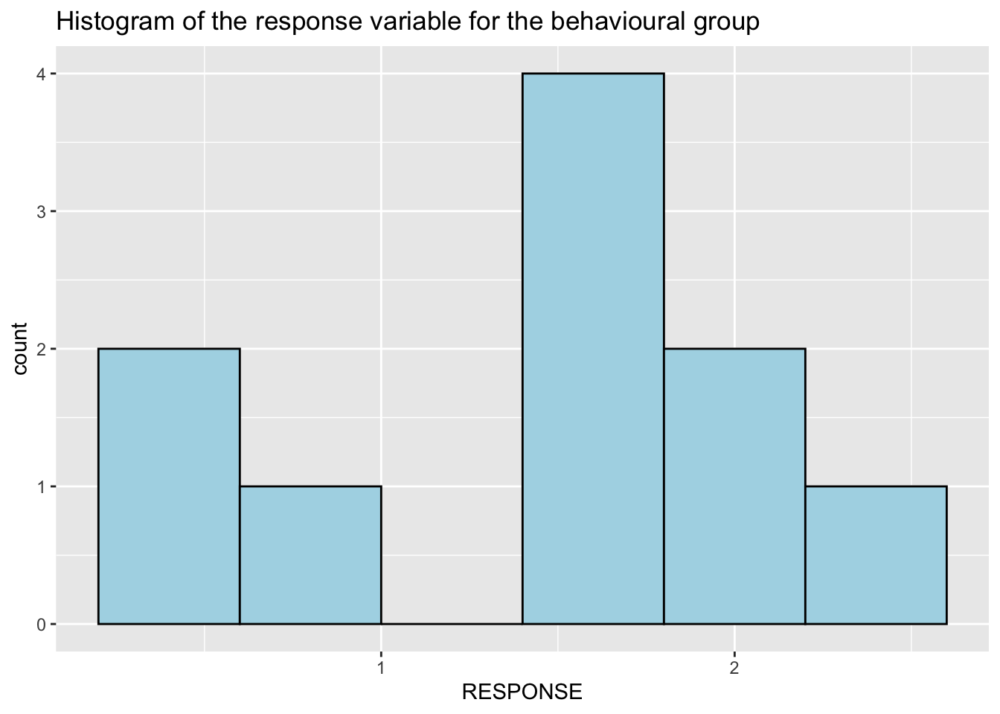
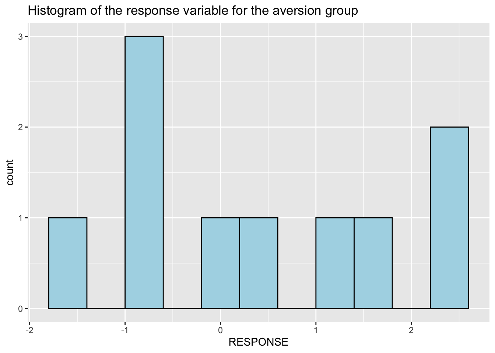
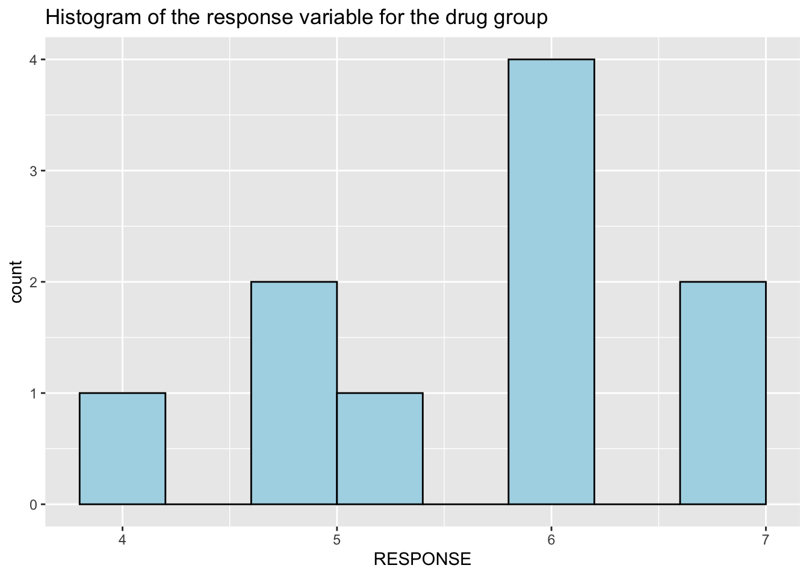

Graphical Diagnostics
Recall that in our ANOVA model we have the following assumptions:
- The observations are independent within and between groups.
- The observations within each group are nearly normal.
- The variability across the groups are equal.
Independence assumption
Recall that if the data are a simple random sample, this condition is satisfied. For our experimental data, there are not obvious reasons why independence would not hold for most or all observations.
Normality assumption
The normality assumption is especially important when the sample size is quite small. However, for the case of small sample sizes, it is difficult to check for non-normality.
The code below produces the histogram for the response scores for the control group using the ggplot() function. The first argument is the data frame containing the scores. The expression which(surgery$TYPE=="control") identifies the rows for which the value for TYPE is control. Furthermore, surgery[which(surgery$TYPE=="control"),] means that we are only getting the rows from the full data for which the value for TYPE is control. This is one of the several ways to subset dataframes in R. In the next argument of the ggplot() function, which is mapping, we specify the name of the variable of interest which is RESPONSE. The function geom_histogram generates the histgoram. Some arguments shown below is the colour which refers to the color of the borders of the bars, and the binwidth which specifies the width of the bins. The default value of the binwidth is not very useful since we have a small sample size, which is 10. For the purpose of getting a better look at the distribution of the values, we adjust the value of the binwidth.
ggplot(data = surgery[which(surgery$TYPE == "control"),], mapping = aes(x = RESPONSE)) +
geom_histogram(fill = "lightblue", colour = "black", binwidth = 0.3) +
labs(title = "Histogram of the response variable for the control group")Exercise 6
Modify the code above to produce the histogram for the response scores for the behavioural group.
What needs to change from the code above is the type of treatment received; now we are interested in behav rather than control. Don't forget to change the plot title!
ggplot(data = surgery[which(surgery$TYPE == "behav"),], mapping = aes(x = RESPONSE)) +
geom_histogram(fill = "lightblue", colour = "black", binwidth = 0.4) +
labs(title = "Histogram of the response variable for the behavioural group")
Exercise 7
Modify the code above to produce the histogram for the response scores for the aversion group.
Again, we are only changing the treatment type within the which() function.
ggplot(data = surgery[which(surgery$TYPE == "aversion"),], mapping = aes(x = RESPONSE)) +
geom_histogram(fill = "lightblue", colour = "black", binwidth = 0.4) +
labs(title = "Histogram of the response variable for the aversion group")
Exercise 8
Modify the code above to produce the histogram for the response scores for the drugs group:
The which() function should be which(surgery$TYPE == "drug").
ggplot(data = surgery[which(surgery$TYPE == "drug"),], mapping = aes(x = RESPONSE)) +
geom_histogram(fill = "lightblue", colour = "black", binwidth = 0.4) +
labs(title = "Histogram of the response variable for the drug group")
The sample size is very small so it is difficult to check for non-normality using the histograms above.
Constant variance across groups
Our graphical approach to check for constant variance across groups is the side-by-side box plot. We already produced the boxplot using the ggplot() and the geom_boxplot() function in the data exploration stage. In addition, we also computed the mean and standard deviation of RESPONSE for each treatment group. The outputs are shown below:

## # A tibble: 4 x 3
## TYPE mean sd
## <chr> <dbl> <dbl>
## 1 aversion 0.44 1.35
## 2 behav 1.5 0.688
## 3 control 1.45 0.981
## 4 drug 5.79 0.933The boxplots and summary statistics above show that the aversion group has relatively higher variability compared to the other groups. A formal hypothesis test needs to be performed to check this assumption. If indeed we have evidence of non-constant variance, then other methods should be used for our statistical inquiry on the experimental data. These alternative methods are not within the scope of this course.